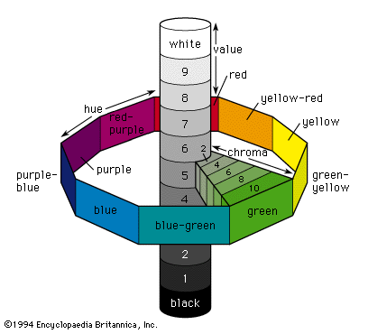
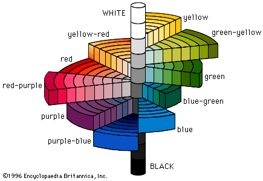

Munsell scale
* Định nghĩa:
+ Thang đo sắc giác Munsell, hay hệ thống đo sắc giác Munsell

+ Một hệ thống phân loại màu sắc bao gồm 1000 mẫu màu, mỗi loại được thiết kế bởi chữ và số. Mẫu chữ và số biểu thị màu sắc (hue), trạng thái bão hòa (được gọi là chroma) và độ sáng (được gọi là giá trị- Value). Chúng được biểu diễn trên hệ thống tọa độ 3 chiều mà tại đó màu sắc xuất hiện dọc theo chu vi đường tròn, giá trị dọc theo trục dọc và chroma theo tia nang hoa.
